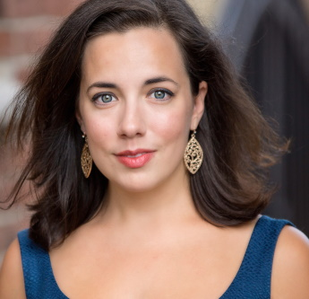
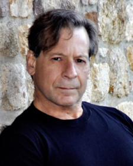
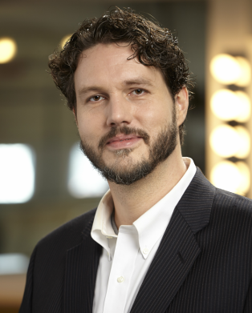
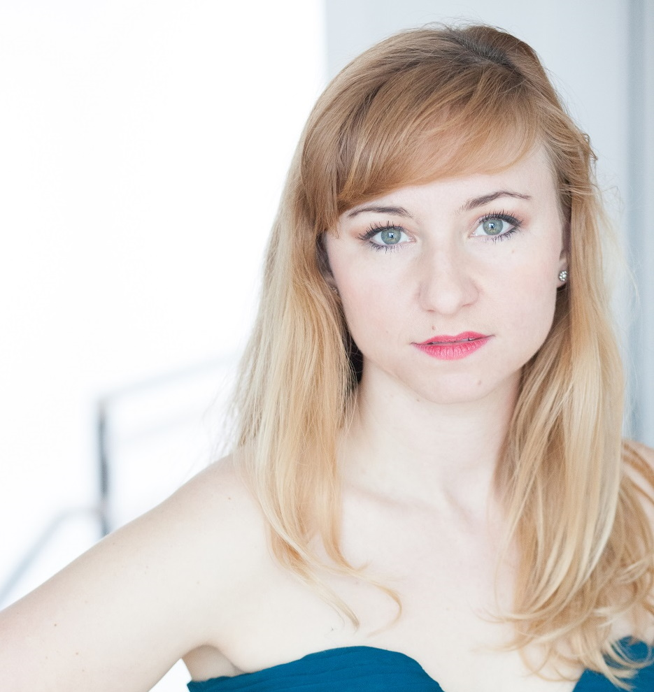
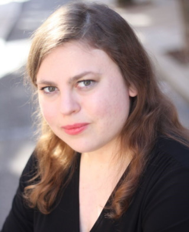

Liebovar Cast and Crew
Maryl Apadula (Properties) moved to Pennsylvania from
New York, where she performed with Amato Opera and the Brooklyn
College Opera; the Amor Artis, Fairfield (CT), Great Neck, and
Treasure House Chorales; and in recitals and concerts in the greater
metropolitan area. She also cantored in Catholic Churches throughout
the Archdiocese of New York, including Ordination Mass at St.
Patrick’s Cathedral. Major opera roles include Mimi in La bohème,
Donna Elvira and Zerlina in Don Giovanni, Susanna in Figaro, Nedda
in I Pagliacci, Mother in Amahl and the Night Visitors and the Queen
of the Night in The Magic Flute. Maryl also cantors and sings in
church choirs in the greater Philadelphia area, directs children’s
choirs and teaches elementary general music.
Joyce Brommer (Assistant Stage Director) ) is a native
of Philadelphia who started her career as a Physical Education
teacher and ended it as a Music Educator. As a mezzo-soprano she has
sung in the choruses of Opera Delaware, Center City Opera, Mozart
and Friends, Concert Opera of Philadelphia and DVOC. For the latter
she has directed Carmen (2006), Amahl and the Night Visitors (2002,
2008), Suor Angelica (2008, 2018), La bohème (2009), Don Pasquale
(2011) and The Telephone (2019). Miss Brommer has been involved with
DVOC for 23 years where she has worked on every aspect of the
company and is an officer on the Board of Directors.

Emily Byrne (Raisa/The Squirrel) is an “impressive
vocalist” with a diverse range of performing credits to her name.
Ms. Byrne was a soloist with the Sofia Philharmonic (Bulgaria) in
their concert of Johann Strauss’ operetta, Blindekuh. This
performance was also recorded for NAXOS and is available on all
streaming platforms. A fan of operetta, Ms. Byrne sang the role of
Olga in Concert Operetta Theater’s production of The Dollar Princess
in 2017. Her favorite professional credits include Dorabella (Cosi
Fan Tutte), Prince Orlofsky (Die Fledermaus), Third Lady (The Magic
Flute), Mercédès (Carmen), Mrs. Nolan (The Medium), Pitti Sing (The
Mikado), Mrs. Gobineau (The Medium), and The Ocean (A Shipwrecked
Opera). Emily K. Byrne is thrilled to be making her Philadelphia
Fringe Festival debut as Raisa/Squirrel in Michael Dutka’s Liebovar.
Nichole Dantoni (Liebovar) is returning for her third
summer on the DVOC stage. Nichole studied vocal performance while
obtaining her degree in Chemical Engineering at Widener University.
She is no stranger to the stage, having performed roles including
Dorothy in The Wizard of Oz, Reno in Anything Goes, Little Red
in Into the Woods, and Ida in Honk! In 2018, she was in the chorus
for DVOC’s Faust and Little Red Riding Hood and followed in 2019 as
cover for Silberklang in The Impressario, as well as singing in the
chorus for La Rondine and Carmen. This summer she was excited to
return to the stage as Dodo in The Merry Widow and St. Anne of the
Cross in Dialogues of the Carmelites.

Misha Dutka (Composer) was excited to be named
composer-in-residence at the Delaware Valley Opera Company. The DVOC
has already performed two of Misha's short operas - Black Horses in
2017, and The Little Red Lighthouse And The Great Gray Bridge in
2018. Misha's also been involved with DVOC as a singer, in the
chorus of Lucia Di Lammermoor in 2016, La bohème in 2017, Amahl and
the Night Visitors and Faust in 2018, and last month's production of
Tales Of Hoffman. Solo DVOC roles include Zuniga in Carmen in 2019
and the First Commissaire in Dialogues of the Carmelites this past
July. Tonight's piece is actually Act III of a longer work of the
same title. Other operas by Misha include The Stronger, premiered by
OperaDelaware, The Crowded House at the Philadelphia Arts Festival,
and Animales En Rima, a bilingual opera commissioned and performed
by Underworld Productions in New York City.

Jeremy Gaylon (Ungeheuer) is a Bass living in Kendall
Park, NJ. He sings with Trinity Church Princeton, the Princeton
Singers, and is represented by Lombardo Associates NYC. Recently
seen as Sparafucile in Rigoletto with Boheme Opera NJ. Mr. Galyon
was Young Artist with Tri-Cities Opera, Glimmerglass Opera, Chicago
Opera Theater, Merola Opera; Solo Artist at Metropolitan Opera with
multiple HD movie broadcasts, MidAmerica Productions at Carnegie
Hall, San Francisco Opera, National Symphony of Costa Rica, National
Symphony of Mexico, Palacio de Belles Artes Mexico City, Houston
Symphony, SF Symphony, and many others. Galyon is a student of
Marvin Keenze, Peyton Hibbitt, and Mark Oswald. This show is
dedicated to his family and two children, and for the need of
children's operas. Bravo, Maestro Dutka!!
Connie Koppe (Stage Director) is pleased to add the
new children’s opera Liebovar to the list of operas she has directed
for The Delaware Valley Opera Company. Directing seemed to be a
natural next step for singer and arts educator, Connie Koppe, who
began directing for DVOC in 1997 with a production of The Merry
Widow. Connie got her directing training from 14 years of watching
professional directors while singing with the Opera Company of
Philadelphia chorus and The Pennsylvania Opera Theater. For DVOC she
has also directed Carmen, The Barber of Seville, The Marriage of
Figaro, The Magic Flute, Cenerentola, Don Giovanni, Il Tabarro and
Amahl and the Night Visitors. For several years, she was the Stage
Director for the Philadelphia Christmas Revels and she directed a
production of The Pirates of Penzance for the Philadelphia Biblical
University’s opera workshop and Don Giovanni for Opera Libera.
Connie holds a BS in Music Education and a Master of Music in Vocal
Performance.

Lily Kull (The Duckling) is thrilled to join DVOC for
her first production! She has previously performed with the Bucks
County Gilbert and Sullivan Society as Casilda in The Gondoliers and
as Kate in The Pirates of Penzance. She has also been seen at Temple
Beth Hillel-Beth El, including their productions of Annie (Grace)
and The Music Man (Marion), and at Temple Adath Israel in The Wizard
of Oz (Dorothy) and The Wild West Mikado (Miriam “Yum-Yum”
Kisswell). In the rare moments when she is not singing, you’ll find
her either working in the lab as a development chemist, or enjoying
some downtime with her husband Jonathan and their cat, Ion.
Cassia Youngeun Lee (The Faun) Soprano, is from South
Korea. She debuted with DVOC in 2017 with the role, Mrs. Gobineau
(The Medium) and Lauretta (cover) (Gianni Schicchi). She sang the
lead cover in Little Red Riding Hood in 2018. Her many other roles
include Giannetta (L’elisir d’amore) with Opera Libera, Witch
(cover) (Hänsel and Gretel), La soura infermiera (Sour Angelica),
and other performances with Temple Opera, and Second Dame (Die
Zauberflüte), and Fiordiligi (Cosi Fan Tutte) with the KCPAOE. She
studied with a PS in Opera, and holds MM in Voice Performance from
Temple University and BM from Ewha Womans University in Korea. As a
music director, she teaches Music at Sacred Heart Academy in Bryn
Mawr. She is a conductor at Emmanuel Presbyterian Church in
Philadelphia.

Anne Margaret O'Malley (Choreographer – Liebovar; Artistic
Director – Flamenco Y Más)
a Philadelphia native, earned a BFA in Dance at the University of
the Arts. She is a Performing and Teaching Artist, with a career
spanning over 25 years and 2 continents. She was a Soloist with the
Philadelphia Civic Ballet Company, resident Choreographer and
featured dancer with the Camerata Opera Theatre, and Flamenco Olé.
Liebovar is her 4th collaboration with The Delaware Valley Opera
Company (Magic Flute 2015, Carmen 2019 and The Merry Widow 2022).
Ms. O’Malley’s work has been featured on local, national and
international television programs and publications and her
choreography has been performed throughout Europe with the Ballet
Des Jeunes. Presently she is Artistic Director of the Spanish Dance
and Flamenco Company, Flamenco y Más which will open this evening’s
performance. She performs regularly for educational programs at Olé
Tapas Restaurant in Newark, Delaware and for festivals and schools
throughout the Delaware Valley. She is looking forward to
choreographing and performing the Spanish Divertissement for the
Wilmington Ballet’s The Nutcracker with Flamenco Y Más and her
Children’s Ensemble this December and then she is off to Europe to
teach Spanish and Flamenco Master Classes for The Irish Ballet
Academy in Dublin, Ireland, January 2023. “I find great joy in
providing opportunities for my company, dancers and their families
to become active participants in all aspects of performing arts.
What an incredible experience it is for them and myself to be part
of the DVOC Philly Fringe’s Art for Young Audiences and a World
Premiere.”

Alize Francheska Rozsnyai (Her Mother) a “sparkling”
(ArtBlog) coloratura soprano “displaying profound imagination and
control” (Philadelphia Inquirer), is a graduate of The Curtis
Institute of Music. The 2022 season has seen Alize as Serpina in La
Serva Padrona with Hub City Opera, Katherine Hutchinson in Silk City
with Garden State Opera, and Rivka in the world premiere of Part I
of Misha Dutka's Liebovar with Opera Boheme New Jersey. Recently,
Alize portrayed Zina in Nico Muhly’s Dark Sisters with Opera
Fayetteville, Soloist in Beth Morrison Projects' Next Gen Concert
with Contemporaneous Ensemble at National Sawdust, Morgana in Alcina
REVAMPED with Alter Ego Chamber Opera, and Phyllis in Iolanthe at
the International Gilbert & Sullivan Festival in Harrogate, England.
Rozsnyai has performed with Rossini Opera Festival in Pesaro, Den
Nye Opera in Bergen, Norway, Opera Philadelphia, San Diego Opera,
Chautauqua Opera, Seattle Symphony [Untitled 3] Series, Carnegie
Hall, The Kennedy Center, Center for Contemporary Opera, and
favorite role credits include Adina (L’elisir d’amore), Cleopatra
(Giulio Cesare), Susanna (Le nozze di Figaro with The Princeton
Symphony), Blanche de la force (Dialogues des Carmélites with Opera
Philadelphia and Curtis), Hilda (Elegy for Young Lovers - Henze),
Ilia (Idomeneo), Eurydice (Orphée aux enfers in Dordogne, France),
La Fée (Cendrillon with Trentino Music Festival), Königin der Nacht
(Die Zauberflöte with Den Nye Oper Orchestra, Bergen, Norway),
Thérèse (Les Mamelles de Tirésias), and concert, Soprano Soloist in
Orff’s Carmina Burana (Cape Cod Symphony), among others.

Julie Smith (The Turtle) ) is happy to perform again
with Delaware Valley Opera Company. This is her fourth production
with the company; previous roles include Suor Dolcina in Suor
Angelica and Bianca in La Rondine. She received her master's in
vocal performance from Temple University and has been singing in
churches and theaters in the greater Philadelphia area. Earlier this
year, Julie was seen as Amy in a rock musical Monster with Foot
Lighters Theater and as Guilia in The Gondoliers with Bucks County
Gilbert and Sullivan Society. Julie is also collaborating with
Wilmington Concert Opera for their Great American Songbook Concerts.
She hopes you all enjoy this new opera!